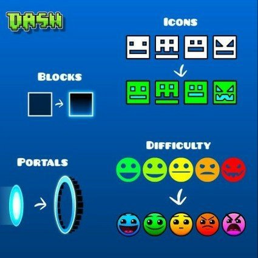
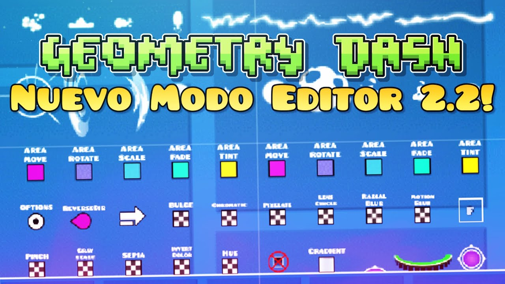
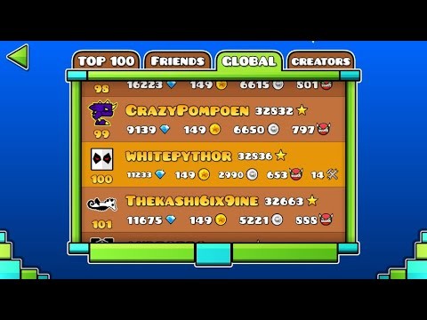
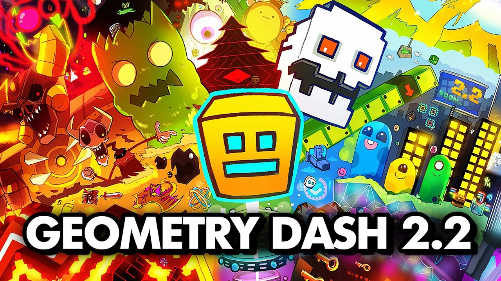

GEOMETRY DASH
EL INICIO DE GEOMETRY DASH
INTRODUCCION
Geometry Dash es un videojuego de plataformas y videojuego rítmico creado en 2013 por el desarrollador sueco Robert Topala (más conocido como RobTop), y posteriormente desarrollado por su empresa independiente RobTop Games. Su lanzamiento se produjo el 13 de agosto de 2013 para dispositivos móviles, y el 22 de diciembre de 2014 para la plataforma de distribución digital Steam, también con su nueva actualización que presentó Robert Topala, la 2.2, con su primera aparición el 17 de abril de 2016, y su lanzamiento el 19 de diciembre de 2023.
JUGABILIDAD
Este juego utiliza un sistema sencillo de pulsación para controlar diferentes vehículos (o de dar clic con el ratón para la distribución Steam) El objetivo del juego es completar los niveles; sin embargo, si el jugador da un mal salto o movimiento contra un obstáculo, tendrá que empezar el nivel desde el principio. De igual forma el juego tiene el modo práctica que, a diferencia del modo normal, permite colocar checkpoints, lo que permite al jugador comenzar en estos lugares en lugar del principio.2 El videojuego presenta 27 niveles oficiales (entre niveles normales y del modo plataforma), de los cuales veinte se pueden jugar a partir del inicio. Las longitudes de los niveles principales normales en el videojuego son de aproximadamente 1:20 a 1:45 minutos.3 Los niveles se clasifican por dificultad, desde fácil hasta «demon»; en los niveles de usuarios, existen las variaciones de «Easy Demon», «Medium Demon», «Hard Demon», «Insane Demon» y «Extreme Demon»..

EDITOR DE NIVELES
Desde el principio del juego, ha existido el modo editor, que con el tiempo ha ido cambiando. El modo editor permite a los usuarios crear sus propios niveles y hacerlos públicos, dejando que cualquiera los juegue, y solo está disponible en la versión completa. Para crear, hay una gran diversidad de objetos como superficies, bloques decorativos, triggers,a portales, orbes, pads, objetos que matan, decoraciones variadas, entre otros. Existen tres modos de editor: build (para colocar objetos), edit (para modificar la posición, rotación, etc, de un objeto ya colocado) y delete (para suprimir objetos). Además, también existen las opciones en el editor; swipe, rotate, free move y snap; el swipe sirve para «modo lápiz», y permite colocar o eliminar objetos deslizando el dedo o cursor por la pantalla (solo funciona con el modo build o delete), el rotate permite girar objetos, el free move permite mover los objetos directamente (solo funciona con el modo edit), y el snap sirve para que los objetos que se coloquen se acomoden a la cuadrícula.b El jugador puede poner hasta 80 000 objetos, pero a partir de los 40 000 se muestra un aviso de que el nivel puede no ser apto para los dispositivos de bajo rendimiento. También el jugador tiene que ser capaz de completar su propio nivel con todas las monedas de usuario, en el caso de que decidiera ponerlas.
TABLAS DE POSICIONES
El juego posee la sección de las puntuaciones globales, está desde los inicios pero se ha ido modificado con el tiempo. Este top está dividido en cuatro secciones: top 100 (anteriormente top 50), amigos, global y creadores. En el top 100 se encuentran los cien jugadores con más estrellas obtenidas en el videojuego. El global es donde se encuentra la posición actual del jugador. En la sección de amigos se encuentran los amigos que el jugador tiene agregado (este apartado solo está disponible si el jugador ha iniciado sesión con su cuenta). Por último, la sección de los creadores, se encuentran los cien jugadores con más puntos de creadores; (los puntos de creadores se obtienen si el nivel del jugador posee un nivel con estrellas o destacado (featured). Desde la actualización 2.11 las actualizaciones globales no se actualizan. No fue hasta el 22 de mayo del 2021 cuando RobTop finalmente arregló las actualizaciones globales.

¿DESDE CUANDO SE ESPERA LA 2.2?
La actualización 2.2 es la actual versión en la que RobTop hizo su primera mención el 7 de abril de 2016, para lanzarla el 19 de diciembre de 2023 (6 años y 11 meses después de su primera mención). Al principio, esta actualización sería la que menos cosas traería, pero con el tiempo esta se volvió demasiado superior a las actualizaciones 2.0 y 2.1. Muchas de las novedades se pueden encontrar en Geometry Dash SubZero (por ejemplo, los movimientos de la cámara) y en los archivos de Meltdown (se puede encontrar el swing, a pesar de que no aparezca en ningún nivel oficial).

VIDEO FILTRADO DE LA 2.2 POR ROBTOP
ROBTOP
COLABORADORES ERICK UZIEL GARCIA REDENDIZ LUIS ANGEL MORALES SALINAS